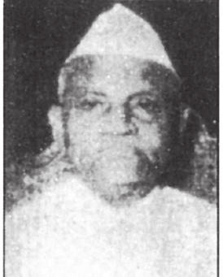

एच. आर. भारद्वाज
कार्यकाल: १९८५ - २००९

एच. के. एल. भगतो
कार्यकाल: १९७५ - १९८९

हरिन पाठक
कार्यकाल: १९९९ - २००४

हर्षवर्धन
कार्यकाल: २०१४ - २०२१

हरसिमरत कौर बादल
कार्यकाल: २०१४ - २०२०

हंसराज गंगाराम अहिरो
कार्यकाल: २०१४ - २०१९

हरिभाई पार्थीभाई चौधरी
कार्यकाल: २०१४ - २०१९

हरीश रावत
कार्यकाल: २००९ - २०१४

हुमायूँ कबीर
कार्यकाल: १९५७ - १९६६
_(cropped).jpg)
हरदीप सिंह पुरी
कार्यकाल: २०१७ - आइ धरि

एच. आर. गोखले
कार्यकाल: १९७१ - १९७७

हरि कृष्ण शास्त्री
कार्यकाल: १९८८ - १९८९

एच. सी. दासप्पा
कार्यकाल: १९६३ - १९६६

राज्यपाल नारायण यादव
कार्यकाल: १९९० - २००४

हरि किशोर सिंह
कार्यकाल: १९९० - १९९०

हरमोहन धवन
कार्यकाल: १९९० - १९९१

एच. डी. देवेगौड़ा
कार्यकाल: १९९६ - १९९६

एम. हीरूभाई पटेल
कार्यकाल: १९७७ - १९७९
हेमवती नंदन बहुगुणा
कार्यकाल: १९७१ - १९७९

हाफिज मोहम्मद इब्राहिम
कार्यकाल: १९५८ - १९६३

हितेंद्र कनैयालाल देसाई
कार्यकाल: १९७६ - १९८०

हेनरी ऑस्टिन
कार्यकाल: १९७९ - १९८०

हरिनाथ मिश्रा
कार्यकाल: १९८३ - १९८५

एच. एम. त्रिवेदी
कार्यकाल: १९७४ - १९७७

हरि विनायक पाटस्कर
कार्यकाल: १९५४ - १९५७

हंस राज खन्ना
कार्यकाल: १९७९ - १९७९

एच. डी.
कार्यकाल: आइ धरि - आइ धरि

हर्ष मल्होत्रा
कार्यकाल: आइ धरि - आइ धरि